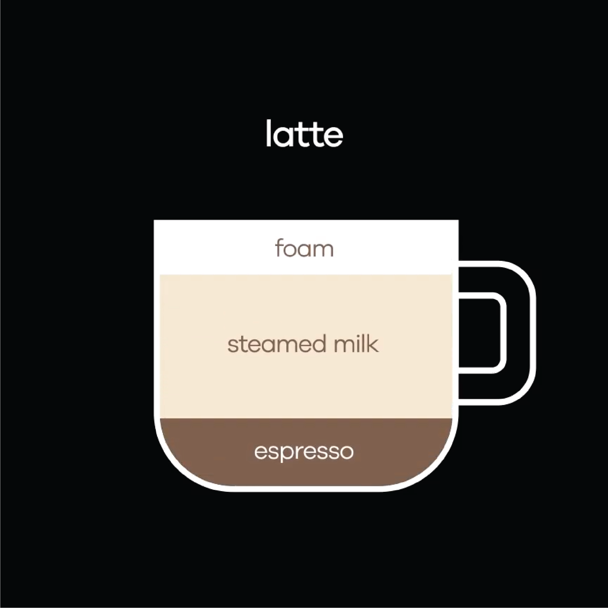

Coffee and milk go together like bread and butter, and the notion of mixing the two has been around for years. Whether known as a café au lait, a caffe con leche or a milchkaffee, our continental friends were creating milky coffees for decades – if not centuries – before W.D Howells first mentioned the term ‘latte’ in an essay penned in 1867. Despite existing in various forms across continental Europe it is the Americans who are widely credited for popularising and commercialising the drink. Synonymous with the Seattle coffee scene of the 1980s, the latte soon became the standard speciality drink of choice of many and has remained a popular option ever since.
